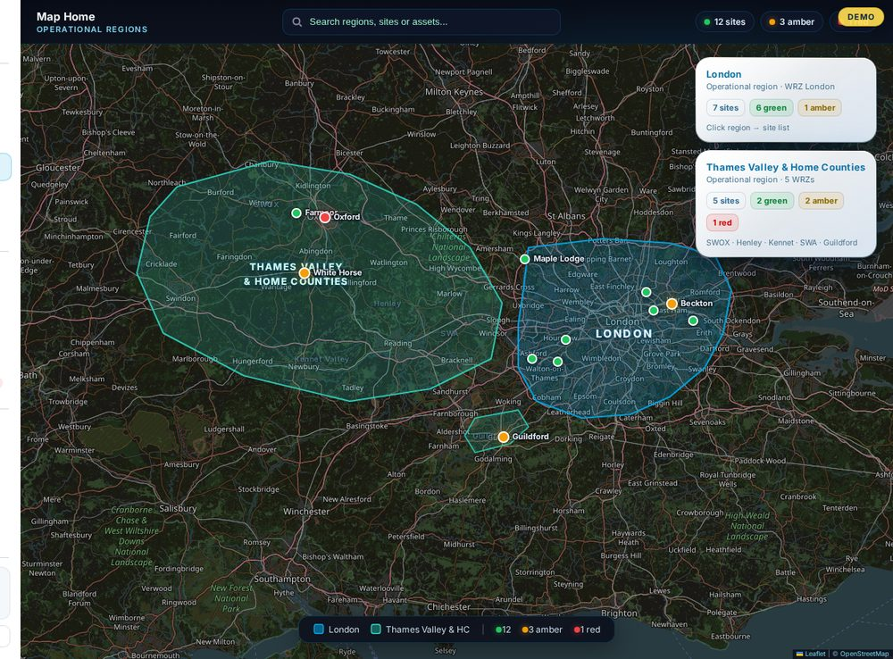
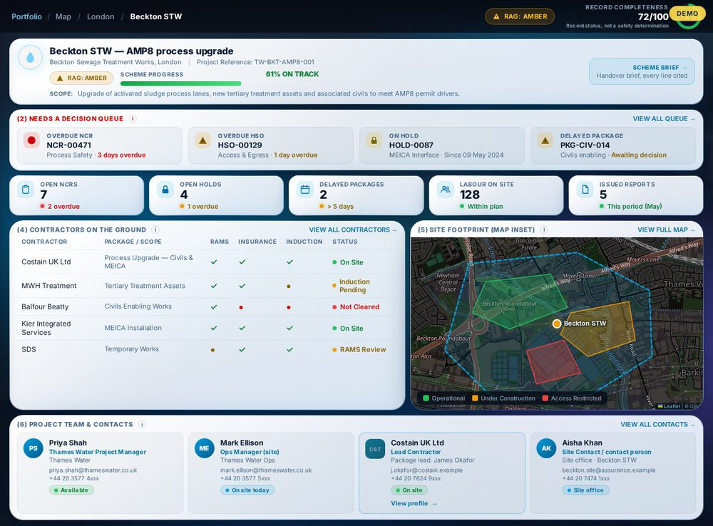
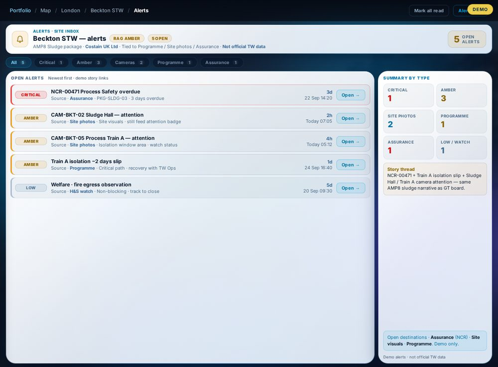
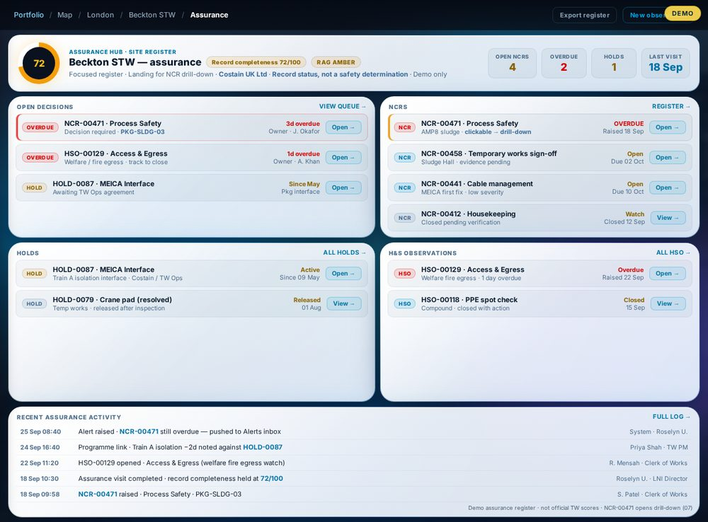

1 of 4 · Portfolio map
Every site, one live picture.
See the whole programme on one map, with each site rated green, amber or red in real time.

2 of 4 · Site dashboard
Open any site and know where it stands.
Progress, open issues, contractors and the site footprint, all in one screen.

3 of 4 · Alerts and decisions
Problems surface early, not at month end.
Alerts from site photos, the programme and assurance checks land in one inbox, ready for a decision.

4 of 4 · Assurance report
Evidence the Board can trust.
An independent, verified view of delivery, ready to share from site to boardroom.